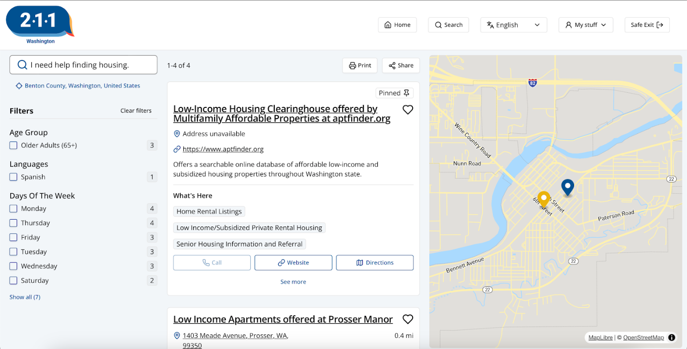

03
The Solution
Each finding below is paired with the fix it drove — the causal link from what we observed to what we recommended.
1 · Minor
2 · Moderate
3 · Major
4 · Critical
Cosmetic, no task impact
Workaround exists, adds friction
Blocks the task without help
Task fails, user abandons
why this scale — placeholder, notes pending
03.1Finding — Navigation Confusion
Major · Severity 3
Users could not find where to start their search. The primary search function required a non-standard 3-step path, buried in a visually busy, low-contrast homepage.
Why it failed
2/6 pts couldn’t find search
Takes 3 steps instead of 1
Low-contrast, busy homepage
No persistent header search
What it fixes
Fixed, always-visible header search
Persists across every page
Follows conventional norms
High-contrast placement

4/6
pts struggled with filters
Why it failed
4/6 pts struggled with filters
No Apply button feedback
No active-filter indicator
2/6 didn’t notice filters existed

What it fixes
Explicit Apply + active-filter indicator
Clear Apply Filter action
Visible “2 Active” badge
Follows conventional norms
2·1·1
Washington
Filters
2 Active
Age Group
Languages
Days of the Week
03.2Finding — Irrelevant Search Results
Critical · Severity 4
After successfully starting a search, results didn't match what participants were looking for — including out-of-state listings for searches explicitly filtered to Washington locations.
3/6
wanted to abandon
Would you keep using a site that kept sending you elsewhere?
Why it failed
4/6 pts received unrelated results
No exact matches for plain-language terms
Broad substitutes with no explanation
Couldn’t tell why results didn’t match

What it fixes
Search tuned to plain-language queries
Matches plain-language terms directly
Right category surfaces first
Follows conventional norms
2·1·1
Washington
Housing Search and Information
Provides centralized intake, assessment, and coordinated entry for housing search assistance.
CallWebsiteDirections
Why it failed
100% results were out-of-state
Location filter not enforced
No distance shown for any result
Users couldn’t verify relevance
Seattle, WA
shelter
Rose City Emergency Shelter
Portland, OR · 174 mi away
What it fixes
Mandatory proximity-first ordering
Distance shown for every result
Nearest match surfaces first
Follows conventional norms
2·1·1
Washington
Housing Resource Center
1.2 mi
Bellingham, WA
Transitional Housing Program
3.8 mi
Mount Vernon, WA
Emergency Shelter Intake
6.1 mi
Ferndale, WA